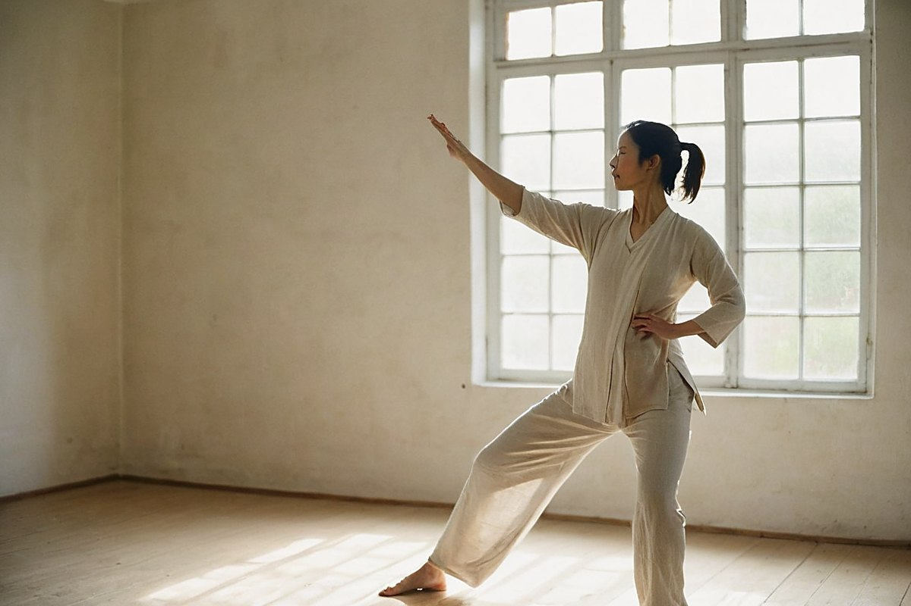

Занятия цигун без мистики и спешки.
Понятный формат, расписание и отдельные уроки. Это не лечение.

Как устроены занятия
Для кого
Начинающие. Можно стоять или сидеть.
Формат
60 минут, группа до 12 человек.
Запись
Имя и Telegram. Контакты подставите свои.
Расписание
| День | Время | Группа | Где |
|---|---|---|---|
| Вторник | 19:00 | Начинающие | Зал |
| Четверг | 10:00 | Утро | Зал |
| Суббота | 11:30 | Открытая | Парк, если сухо |
Пять упражнений

Запуск
Все фотографии лежат в папке img, сайт работает без интернета. Для локального просмотра запустите start.bat — он поднимет простой веб-сервер на порту 8080.